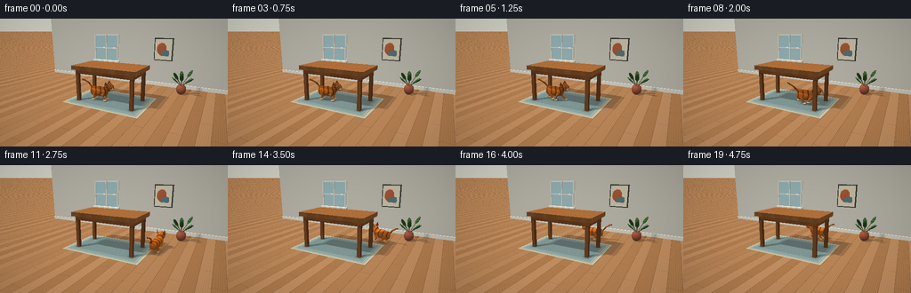
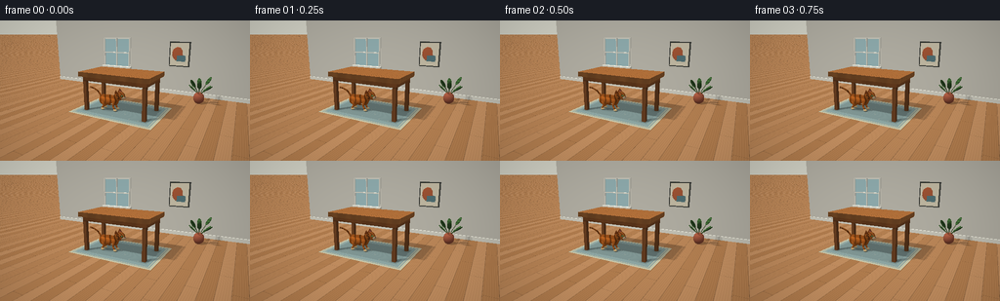
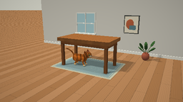
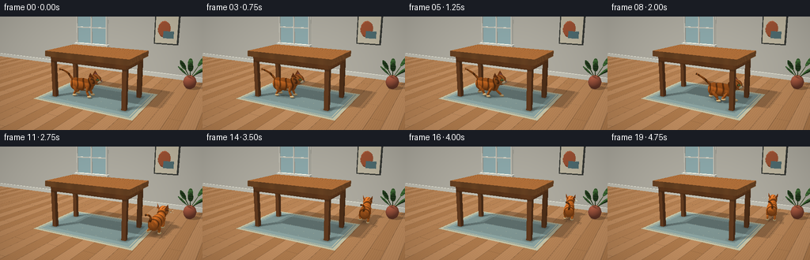

CODING AGENTS AS PIXEL WORLD MODELS
traex/GPT-6.1-Sol · dynamic_spatial_relationship_0018
点击播放 · 原生 RGB 像素
逐轮保存的候选
回放视频、检查图与代码变化。
每份候选均可单独播放。实际图片检查记录在下方工具轨迹中。
候选 01播放与检查图
点击播放 · 原生 RGB 像素


展开代码变化
--- 上一保存版本
+++ 本次保存版本
@@ -0,0 +1,288 @@
+import os, json, math
+from pathlib import Path
+import numpy as np
+from PIL import Image
+import artifact_io
+
+ROOT=Path(__file__).resolve().parent
+W,H=512,288
+DT=np.float32
+
+def norm(a):
+ a=np.asarray(a,dtype=DT)
+ return a/np.maximum(np.sqrt(np.sum(a*a,axis=-1,keepdims=True)),1e-8)
+def rotation(a):
+ c,s=np.cos(a),np.sin(a)
+ return np.array([[c,-s,0],[s,c,0],[0,0,1]],dtype=DT)
+def dot(a,b):return np.sum(a*b,axis=-1)
+
+class Shape:
+ def __init__(self,typ,c,size,mat,R=None,extra=None):
+ self.typ=typ;self.c=np.asarray(c,DT);self.size=np.asarray(size,DT);self.mat=mat
+ self.R=np.eye(3,dtype=DT) if R is None else np.asarray(R,DT);self.extra=extra
+ def local(self,v):
+ return np.stack([dot(v,self.R[:,i]) for i in range(3)],-1)
+ def hit(self,o,d):
+ q=self.local(o-self.c);v=self.local(d)
+ if self.typ=='ell':
+ q=q/self.size;v=v/self.size
+ a=dot(v,v);b=dot(q,v);c=dot(q,q)-1;disc=b*b-a*c
+ t=(-b-np.sqrt(np.maximum(0,disc)))/np.maximum(a,1e-15)
+ return np.where((disc>=0)&(t>1e-4),t,np.inf)
+ if self.typ=='box':
+ inv=1/np.where(np.abs(v)>1e-9,v,1e-9)
+ aa=(-self.size-q)*inv;bb=(self.size-q)*inv
+ tmin=np.max(np.minimum(aa,bb),-1);tmax=np.min(np.maximum(aa,bb),-1)
+ return np.where((tmin<=tmax)&(tmax>1e-4),np.where(tmin>1e-4,tmin,tmax),np.inf)
+ if self.typ=='tri':
+ a,b,c=self.extra;e1=b-a;e2=c-a;p=np.cross(d,e2);det=dot(p,e1)
+ inv=1/np.where(abs(det)>1e-8,det,1e-8);tv=o-a
+ u=dot(tv,p)*inv;qv=np.cross(tv,e1);vv=dot(d,qv)*inv;t=dot(qv,e2)*inv
+ return np.where((abs(det)>1e-8)&(u>=0)&(vv>=0)&(u+vv<=1)&(t>1e-4),t,np.inf)
+ def normal(self,p):
+ q=self.local(p-self.c)
+ if self.typ=='ell': n=norm(q/(self.size*self.size))
+ elif self.typ=='box':
+ idx=np.argmax(np.abs(q/self.size),-1);n=np.zeros_like(q)
+ n[np.arange(len(q)),idx]=np.sign(q[np.arange(len(q)),idx])
+ else:
+ a,b,c=self.extra
+ return np.broadcast_to(norm(np.cross(b-a,c-a)),p.shape).copy()
+ return n@self.R.T
+
+scene=[]
+def ell(c,s,mat,R=None):scene.append(Shape('ell',c,s,mat,R));return scene[-1]
+def box(c,s,mat,R=None):scene.append(Shape('box',c,s,mat,R));return scene[-1]
+def tri(a,b,c,mat):
+ scene.append(Shape('tri',[0,0,0],[1,1,1],mat,extra=np.array([a,b,c],DT)))
+def segment(a,b,r,mat,r2=None):
+ a,b=np.array(a,DT),np.array(b,DT);z=norm(b-a)
+ x=norm(np.cross(z,[0,0,1] if abs(z[2])<.95 else [0,1,0]));y=np.cross(z,x)
+ ell((a+b)/2,[r,r if r2 is None else r2,np.linalg.norm(b-a)/2+r],mat,np.stack([x,y,z],1))
+
+# Fixed camera: a low, three-quarter view keeps the cat and the far side legible.
+cam=np.array([4.7,-8.3,3.5],DT);target=np.array([0,.35,.88],DT)
+fwd=norm(target-cam);right=norm(np.cross(fwd,[0,0,1]));up=np.cross(right,fwd)
+yy,xx=np.mgrid[:H,:W];focal=432
+rays=norm(fwd[None,:]+((xx.flatten()+.5-W/2)/focal)[:,None]*right+((H/2-yy.flatten()-.5)/focal)[:,None]*up)
+rays=rays.astype(DT)
+light=norm(np.array([-3,-4,7],DT))
+
+def static():
+ # Room furniture in oak. The open under-table space is deliberately unobstructed.
+ box([0,0,1.75],[1.73,.95,.105],'top')
+ for y in [-.76,.76]:box([0,y,1.55],[1.57,.065,.10],'oak')
+ for x in [-1.53,1.53]:box([x,0,1.55],[.065,.76,.10],'oak')
+ for x in [-1.50,1.50]:
+ for y in [-.73,.73]:
+ box([x,y,.77],[.082,.082,.77],'leg')
+ # Quiet rear wall, baseboard and window.
+ box([0,4.1,2.5],[8,.05,2.5],'wall')
+ box([0,4.02,.11],[8,.035,.11],'trim')
+ box([-2.55,4.00,2.35],[1.0,.025,.97],'trim')
+ box([-2.55,3.96,2.35],[.91,.018,.88],'glass')
+ for x in [-3.49,-2.55,-1.61]:box([x,3.91,2.35],[.035,.04,.94],'trim')
+ box([-2.55,3.91,2.35],[.96,.04,.032],'trim')
+ box([-2.55,3.87,1.40],[1.07,.13,.06],'trim')
+ # A restrained framed print and a plant, away from the action.
+ box([1.6,4.0,2.40],[.59,.055,.71],'frame')
+ box([1.6,3.93,2.40],[.53,.01,.65],'art')
+ ell([1.50,3.90,2.43],[.30,.015,.38],'artorange')
+ box([1.72,3.89,2.17],[.25,.012,.17],'artblue')
+ ell([3.05,2.8,.30],[.27,.27,.31],'pot')
+ for i in range(9):
+ a=i*2.399;r=.18+.1*(i%2);p=np.array([3.05,2.8,.48]);tip=np.array([3.05+np.cos(a)*r*2,2.8+np.sin(a)*r*2,.80+.12*(i%4)])
+ segment(p,tip,.013,'stem')
+ z=norm(tip-p);x=norm(np.cross(z,[0,0,1]));y=np.cross(z,x)
+ ell(tip,[.11,.035,.25],'leaf',np.stack([x,y,z],1))
+
+cat_pos=None;cat_R=None
+
+def cat(frame):
+ global cat_pos,cat_R
+ # A short pause under the tabletop, followed by a continuous run around its right side.
+ points=np.array([[-.53,-.22],[.15,-.20],[1.05,-.12],[2.13,.05],[2.30,.92],[1.94,1.68],[1.08,1.90],[.55,1.9]],float)
+ if frame<5:
+ p=points[0];yaw=.08+.045*np.sin(frame*.9);running=False;phase=0
+ else:
+ u=(frame-5)/12
+ u=np.clip(u,0,1)
+ # Cardinal spline with a smooth exit and a visible arc around the back leg.
+ tt=u*(len(points)-1);idx=min(int(tt),len(points)-2);v=tt-idx
+ a=points[max(0,idx-1)];b=points[idx];c=points[idx+1];d=points[min(len(points)-1,idx+2)]
+ p=.5*((2*b)+(-a+c)*v+(2*a-5*b+4*c-d)*v*v+(-a+3*b-3*c+d)*v*v*v)
+ tangent=.5*((-a+c)+2*(2*a-5*b+4*c-d)*v+3*(-a+3*b-3*c+d)*v*v)
+ yaw=np.arctan2(tangent[1],tangent[0]);running=frame<17;phase=(frame-5)*1.92
+ if frame>=17:yaw=np.pi-.05
+ cat_pos=np.array([p[0],p[1],0],DT);cat_R=rotation(yaw)
+ bob=.036*np.sin(phase*2) if running else .005*np.sin(frame*.7)
+ def cp(p):return np.asarray(p,DT)@cat_R.T+cat_pos
+ def ce(p,s,mat='fur',R=None):ell(cp(p),s,mat,cat_R if R is None else cat_R@R)
+ def cs(a,b,r,mat='fur',r2=None):segment(cp(a),cp(b),r,mat,r2)
+ # Limbs, with alternating extended and gathered feet.
+ for k,(x,y) in enumerate([[-.30,-.15],[.30,-.15],[-.30,.15],[.30,.15]]):
+ ph=phase+(0 if k in (0,3) else np.pi)+(.3 if x<0 else 0)
+ if running:
+ footx=x+.22*np.cos(ph);footz=.060+.16*max(0,np.sin(ph))
+ else:footx=x+(.03 if x>.1 else -.03);footz=.06
+ hip=[x,y,.47+bob];knee=[x+(.095 if x<0 else -.07)+.08*np.cos(ph) if running else x+(.08 if x<0 else -.04),y,.25+bob]
+ cs(hip,knee,.075 if x<0 else .055)
+ cs(knee,[footx,y,footz+.04],.046)
+ ce([footx+.035,y,footz],[.092,.063,.048],'paw')
+ ce([-.02,0,.49+bob],[.48,.215,.255])
+ ce([-.31,0,.48+bob],[.225,.215,.255])
+ ce([.30,0,.51+bob],[.18,.195,.245])
+ ce([.12,0,.385+bob],[.33,.175,.11],'cream')
+ ce([.40,0,.655+bob],[.16,.17,.225])
+ ce([.575,0,.752+bob],[.225,.19,.20],'head')
+ # Triangular ears, including inset pink ear leather.
+ for sy in [-1,1]:
+ a=[.40,sy*.09,.85+bob];b=[.60,sy*.20,.86+bob];c=[.45,sy*.205,1.065+bob];d=[.35,sy*.17,.88+bob]
+ for verts in [(a,b,c),(b,d,c),(d,a,c)]:tri(*[cp(q) for q in verts],'ear')
+ tri(cp([.444,sy*.125,.89+bob]),cp([.57,sy*.185,.897+bob]),cp([.455,sy*.193,1.015+bob]),'pink')
+ # Eyes sit on the forward-facing cheeks, with a green iris and vertical pupil.
+ for sy in [-1,1]:
+ n=norm([.65,sy*.70,.18]);z=norm([-.12,-sy*.10,1]);t=norm(np.cross(z,n));z=norm(np.cross(n,t));er=np.stack([t,z,n],1)
+ center=np.array([.716,sy*.124,.795+bob]);ce(center,[.074,.045,.014],'eyeline',er)
+ ce(center+n*.010,[.060,.034,.014],'eye',er)
+ ce(center+n*.020,[.010,.029,.008],'pupil',er)
+ ce(center+n*.027+z*.013-t*.012,[.008,.008,.004],'shine',er)
+ ce([.742,-.065,.699+bob],[.085,.073,.070],'cream')
+ ce([.742,.065,.699+bob],[.085,.073,.070],'cream')
+ ce([.814,0,.726+bob],[.023,.034,.021],'nose')
+ cs([.809,0,.710+bob],[.805,0,.677+bob],.004,'eyeline')
+ for sy in [-1,1]:
+ cs([.805,0,.678+bob],[.796,sy*.045,.674+bob],.003,'eyeline')
+ for j in range(3):
+ a=[.783,sy*.060,.70+bob-j*.017];b=[.79-(j*.036),sy*(.28+j*.024),.72+bob+(1-j)*.032]
+ cs(a,b,.0026,'whisker')
+ # A raised, naturally curved tail made from overlapping tapered segments.
+ tail=[]
+ for i in range(12):
+ t=i/11
+ tail.append([-.43-.58*t,.03+.065*np.sin(t*4+frame*.2),.55+bob+.47*np.sin(t*1.45)+(.025*np.sin(phase) if running else 0)*t])
+ for i in range(11):cs(tail[i],tail[i+1],.049-.020*(i/11),'tail')
+ ce(tail[-1],[.032,.032,.040],'tailtip')
+
+basecolors={'oak':[.52,.295,.14],'top':[.63,.385,.19],'leg':[.50,.29,.145],
+ 'wall':[.82,.805,.75],'trim':[.91,.90,.84],'glass':[.65,.79,.80],'frame':[.24,.25,.23],
+ 'art':[.90,.86,.75],'artorange':[.72,.36,.22],'artblue':[.35,.49,.51],
+ 'pot':[.61,.31,.22],'stem':[.20,.30,.13],'leaf':[.23,.40,.19],
+ 'fur':[.80,.40,.12],'head':[.84,.44,.16],'ear':[.64,.30,.10],'pink':[.72,.38,.32],
+ 'paw':[.89,.76,.53],'cream':[.94,.84,.65],'eyeline':[.14,.10,.07],'eye':[.50,.67,.29],
+ 'pupil':[.045,.050,.035],'shine':[1,1,.90],'nose':[.60,.28,.24], 'whisker':[.91,.88,.75],
+ 'tail':[.76,.38,.11],'tailtip':[.35,.20,.09]}
+
+def texture(mat,p,n,shape):
+ c=np.broadcast_to(np.array(basecolors[mat],DT),p.shape).copy()
+ if mat in ['top','oak','leg']:
+ q=shape.local(p-shape.c)
+ grain=np.sin(q[:,1]*140+np.sin(q[:,0]*3)*2+.6*np.sin(q[:,0]*13))
+ fine=np.sin(q[:,1]*560+q[:,0]*9)
+ c*=((.96+.05*grain+.015*fine))[:,None]
+ if mat=='top':
+ seams=np.abs(np.sin((q[:,1]+.95)*np.pi/.31))<.016
+ c[seams]*=.74
+ elif mat in ['fur','head','ear','tail']:
+ q=(p-cat_pos)@cat_R
+ if mat=='tail':
+ wave=np.sin(q[:,0]*32+q[:,2]*12)
+ elif mat=='head':
+ wave=np.sin(q[:,1]*47+q[:,2]*9+q[:,0]*17)
+ else:wave=np.sin(q[:,0]*24+np.sin(q[:,2]*9)*1.25+q[:,1]*5)
+ stripes=np.clip((wave-.55)/.27,0,1)
+ if mat=='fur':stripes*=np.clip((q[:,2]-.29)*5,0,1)
+ c*=1-.44*stripes[:,None]
+ fuzz=np.sin(q[:,0]*430+np.sin(q[:,1]*237)+q[:,2]*230)*np.sin(q[:,2]*380+q[:,1]*290)
+ c*=1+.036*fuzz[:,None]
+ elif mat=='leaf':c*= (.86+.15*np.sin(p[:,2]*50))[:,None]
+ return c
+
+
+def floorcolor(p):
+ x,y=p[:,0],p[:,1]
+ row=np.floor((x+20)/.46).astype(int);seam=np.minimum(np.mod(x+20,.46),.46-np.mod(x+20,.46))
+ grain=np.sin(x*90+np.sin(y*1.2)*2)+.4*np.sin(x*360+y*2)
+ variation=.035*np.sin(row*9.75)
+ c=np.stack([.64+variation+.013*grain,.45+variation+.012*grain,.285+variation+.010*grain],1)
+ c[seam<.008]*=.77
+ ends=np.mod(y+np.mod(row*1.23,3.8),3.8)
+ c[ends<.012]*=.79
+ # Woven blue-grey rug under the table. Fine double border gives strong ground-plane cues.
+ rug=(abs(x)<2.06)&(abs(y)<1.40)
+ edge=np.minimum(2.06-abs(x),1.40-abs(y))
+ rc=np.broadcast_to([.48,.57,.56],p.shape).copy()
+ weave=.018*np.sin(x*440)*np.sin(y*455)
+ rc+=weave[:,None]
+ border=(edge<.12)|((edge>.17)&(edge<.205))
+ rc[border]=[.70,.69,.58]
+ diamonds=np.cos(x*15)+np.cos(y*15)
+ pat=(diamonds>1.95)&(edge>.23)
+ rc[pat]=[.62,.66,.60]
+ c[rug]=rc[rug]
+ return c
+
+
+def render(frame):
+ global scene
+ scene=[];static();cat(frame)
+ count=len(rays);o=cam;d=rays
+ t=np.full(count,np.inf,DT);ids=np.full(count,-1,np.int32)
+ # Infinite oak floor.
+ tf=-cam[2]/d[:,2];ok=(tf>0)&(d[:,2]<0);t[ok]=tf[ok]
+ for idx,s in enumerate(scene):
+ ts=s.hit(o,d);m=ts<t;t[m]=ts[m];ids[m]=idx
+ p=cam+d*t[:,None]
+ finite=np.isfinite(t);p[~finite]=0
+ ns=np.zeros_like(p);colors=np.zeros_like(p);ns[:,2]=1
+ colors[ids==-1]=floorcolor(p[ids==-1])
+ for idx,s in enumerate(scene):
+ m=ids==idx
+ if np.any(m):
+ ns[m]=s.normal(p[m]);colors[m]=texture(s.mat,p[m],ns[m],s)
+ # One crisp-but-softened analytic directional shadow plus contact ambient shading.
+ diffuse=np.clip(dot(ns,light),0,1)
+ sh=np.ones(count,DT)
+ active=finite&(diffuse>.015)
+ si=np.flatnonzero(active);sp=p[si]+ns[si]*.004
+ # Two nearby light samples produce gentle penumbrae without a rendering engine.
+ shadowtotal=np.zeros(len(si),DT)
+ for offset in [[-.04,.01,0],[.04,-.01,0]]:
+ ld=norm(light+np.array(offset,DT));occluded=np.zeros(len(si),bool)
+ for s in scene:
+ if s.mat in ['wall','glass','trim','art','artorange','artblue','frame']:continue
+ th=s.hit(sp,ld);occluded|=np.isfinite(th)
+ shadowtotal+=occluded.astype(DT)*.5
+ sh[si]=1-shadowtotal*.77
+ ambient=.60+.14*np.clip(ns[:,2],-1,1)
+ # Ground and table contact darkening; warm reflected floor light on lower surfaces.
+ ground=ids==-1
+ gx,gy=p[:,0],p[:,1]
+ contact=np.ones(count,DT)
+ for x in [-1.5,1.5]:
+ for y in [-.73,.73]:contact*=1-.27*np.exp(-((gx-x)**2+(gy-y)**2)/.022)*ground
+ cq=(p-cat_pos)@cat_R
+ contact*=1-.30*np.exp(-((cq[:,0]/.53)**2+(cq[:,1]/.26)**2)*2)*ground
+ under=(abs(gx)<1.7)&(abs(gy)<.93)&(p[:,2]<1.48)
+ ambient[under]*=.84
+ illum=(ambient+.46*diffuse*sh)*contact
+ rgb=colors*illum[:,None]
+ # Very subtle highlights on oak and the eyes.
+ view=norm(cam-p);half=norm(view+light)
+ spec=np.maximum(0,dot(ns,half))**40
+ for idx,s in enumerate(scene):
+ if s.mat in ['top','eye','nose','pupil']:
+ m=ids==idx;rgb[m]+=spec[m,None]*(.12 if s.mat=='top' else .27)*sh[m,None]
+ rgb[~finite]=[.81,.81,.76]
+ # A photographic tone response and a restrained vignette.
+ rgb=np.clip(rgb,0,1)**.94
+ vign=1-.095*((xx.flatten()-W/2)/(W/2))**2-.055*((yy.flatten()-H/2)/(H/2))**2
+ rgb*=vign[:,None]
+ arr=(np.clip(rgb,0,1)*255+.5).astype(np.uint8).reshape(H,W,3)
+ return np.array(Image.fromarray(arr).resize((256,144),Image.Resampling.LANCZOS))
+
+if __name__=='__main__':
+ frames=[]
+ for i in range(20):
+ f=render(i); frames.append(f); Image.fromarray(f).save(ROOT / '.tmp' / f'render_{i:02d}.png'); print('Rendered',i,flush=True)
+ artifact_io.save(np.stack(frames),ROOT)
候选 02播放与检查图
点击播放 · 原生 RGB 像素

展开代码变化
--- 上一保存版本
+++ 本次保存版本
@@ -63,7 +63,7 @@
# Fixed camera: a low, three-quarter view keeps the cat and the far side legible.
cam=np.array([4.7,-8.3,3.5],DT);target=np.array([0,.35,.88],DT)
fwd=norm(target-cam);right=norm(np.cross(fwd,[0,0,1]));up=np.cross(right,fwd)
-yy,xx=np.mgrid[:H,:W];focal=432
+yy,xx=np.mgrid[:H,:W];focal=640
rays=norm(fwd[None,:]+((xx.flatten()+.5-W/2)/focal)[:,None]*right+((H/2-yy.flatten()-.5)/focal)[:,None]*up)
rays=rays.astype(DT)
light=norm(np.array([-3,-4,7],DT))
@@ -77,8 +77,8 @@
for y in [-.73,.73]:
box([x,y,.77],[.082,.082,.77],'leg')
# Quiet rear wall, baseboard and window.
- box([0,4.1,2.5],[8,.05,2.5],'wall')
- box([0,4.02,.11],[8,.035,.11],'trim')
+ box([0,4.1,2.5],[30,.05,2.5],'wall')
+ box([0,4.02,.11],[30,.035,.11],'trim')
box([-2.55,4.00,2.35],[1.0,.025,.97],'trim')
box([-2.55,3.96,2.35],[.91,.018,.88],'glass')
for x in [-3.49,-2.55,-1.61]:box([x,3.91,2.35],[.035,.04,.94],'trim')
@@ -101,7 +101,7 @@
def cat(frame):
global cat_pos,cat_R
# A short pause under the tabletop, followed by a continuous run around its right side.
- points=np.array([[-.53,-.22],[.15,-.20],[1.05,-.12],[2.13,.05],[2.30,.92],[1.94,1.68],[1.08,1.90],[.55,1.9]],float)
+ points=np.array([[-.53,-.22],[.15,-.20],[1.05,-.12],[2.13,.05],[2.30,.92],[2.16,1.65],[2.10,2.12],[2.08,2.23]],float)
if frame<5:
p=points[0];yaw=.08+.045*np.sin(frame*.9);running=False;phase=0
else:
@@ -113,7 +113,7 @@
p=.5*((2*b)+(-a+c)*v+(2*a-5*b+4*c-d)*v*v+(-a+3*b-3*c+d)*v*v*v)
tangent=.5*((-a+c)+2*(2*a-5*b+4*c-d)*v+3*(-a+3*b-3*c+d)*v*v)
yaw=np.arctan2(tangent[1],tangent[0]);running=frame<17;phase=(frame-5)*1.92
- if frame>=17:yaw=np.pi-.05
+ if frame>=17:yaw=1.78
cat_pos=np.array([p[0],p[1],0],DT);cat_R=rotation(yaw)
bob=.036*np.sin(phase*2) if running else .005*np.sin(frame*.7)
def cp(p):return np.asarray(p,DT)@cat_R.T+cat_pos
候选 03播放与检查图

可观测工具轨迹
实际执行的命令与返回图片。
命令 1exit 0
/bin/bash -lc 'ls -la && cat prompt.txt && cat GENERATION_RULES.md && cat task_spec.json'
命令 2exit 0
/bin/bash -lc "cat artifact_io.py && python - <<'PY' import importlib.util for m in ['numpy','PIL','imageio','scipy']: print(m, bool(importlib.util.find_spec(m))) PY"
命令 3exit 1
/bin/bash -lc "cat > generate.py <<'PY'
import os, json, math
from pathlib import Path
import numpy as np
from PIL import Image
import artifact_io
ROOT=Path(__file__).resolve().parent
W,H=512,288
DT=np.float32
def norm(a):
a=np.asarray(a,dtype=DT)
return a/np.maximum(np.sqrt(np.sum(a*a,axis=-1,keepdims=True)),1e-8)
def rotation(a):
c,s=np.cos(a),np.sin(a)
return np.array([[c,-s,0],[s,c,0],[0,0,1]],dtype=DT)
def dot(a,b):return np.sum(a*b,axis=-1)
class Shape:
def __init__(self,typ,c,size,mat,R=None,extra=None):
self.typ=typ;self.c=np.asarray(c,DT);self.size=np.asarray(size,DT);self.mat=mat
self.R=np.eye(3,dtype=DT) if R is None else np.asarray(R,DT);self.extra=extra
def local(self,v):
return np.stack([dot(v,self.R[:,i]) for i in range(3)],-1)
def hit(self,o,d):
q=self.local(o-self.c);v=self.local(d)
if self.typ=='ell':
q=q/self.size;v=v/self.size
a=dot(v,v);b=dot(q,v);c=dot(q,q)-1;disc=b*b-a*c
t=(-b-np.sqrt(np.maximum(0,disc)))/np.maximum(a,1e-15)
return np.where((disc>=0)&(t>1e-4),t,np.inf)
if self.typ=='box':
inv=1/np.where(np.abs(v)>1e-9,v,1e-9)
aa=(-self.size-q)*inv;bb=(self.size-q)*inv
tmin=np.max(np.minimum(aa,bb),-1);tmax=np.min(np.maximum(aa,bb),-1)
return np.where((tmin<=tmax)&(tmax>1e-4),np.where(tmin>1e-4,tmin,tmax),np.inf)
if self.typ=='tri':
a,b,c=self.extra;e1=b-a;e2=c-a;p=np.cross(d,e2);det=dot(p,e1)
inv=1/np.where(abs(det)>1e-8,det,1e-8);tv=o-a
u=dot(tv,p)*inv;qv=np.cross(tv,e1);vv=dot(d,qv)*inv;t=dot(qv,e2)*inv
return np.where((abs(det)>1e-8)&(u>=0)&(vv>=0)&(u+vv<=1)&(t>1e-4),t,np.inf)
def normal(self,p):
q=self.local(p-self.c)
if self.typ=='ell': n=norm(q/(self.size*self.size))
elif self.typ=='box':
idx=np.argmax(np.abs(q/self.size),-1);n=np.zeros_like(q)
n[np.arange(len(q)),idx]=np.sign(q[np.arange(len(q)),idx])
else:
a,b,c=self.extra
return np.broadcast_to(norm(np.cross(b-a,c-a)),p.shape).copy()
return n@self.R.T
scene=[]
def ell(c,s,mat,R=None):scene.append(Shape('ell',c,s,mat,R));return scene[-1]
def box(c,s,mat,R=None):scene.append(Shape('box',c,s,mat,R));return scene[-1]
def tri(a,b,c,mat):
scene.append(Shape('tri',[0,0,0],[1,1,1],mat,extra=np.array([a,b,c],DT)))
def segment(a,b,r,mat,r2=None):
a,b=np.array(a,DT),np.array(b,DT);z=norm(b-a)
x=norm(np.cross(z,[0,0,1] if abs(z[2])<.95 else [0,1,0]));y=np.cross(z,x)
ell((a+b)/2,[r,r if r2 is None else r2,np.linalg.norm(b-a)/2+r],mat,np.stack([x,y,z],1))
# Fixed camera: a low, three-quarter view keeps the cat and the far side legible.
cam=np.array([4.7,-8.3,3.5],DT);target=np.array([0,.35,.88],DT)
fwd=norm(target-cam);right=norm(np.cross(fwd,[0,0,1]));up=np.cross(right,fwd)
yy,xx=np.mgrid[:H,:W];focal=432
rays=norm(fwd[None,:]+((xx.flatten()+.5-W/2)/focal)[:,None]*right+((H/2-yy.flatten()-.5)/focal)[:,None]*up)
rays=rays.astype(DT)
light=norm(np.array([-3,-4,7],DT))
def static():
# Room furniture in oak. The open under-table space is deliberately unobstructed.
box([0,0,1.75],[1.73,.95,.105],'top')
for y in [-.76,.76]:box([0,y,1.55],[1.57,.065,.10],'oak')
for x in [-1.53,1.53]:box([x,0,1.55],[.065,.76,.10],'oak')
for x in [-1.50,1.50]:
for y in [-.73,.73]:
box([x,y,.77],[.082,.082,.77],'leg')
# Quiet rear wall, baseboard and window.
box([0,4.1,2.5],[8,.05,2.5],'wall')
box([0,4.02,.11],[8,.035,.11],'trim')
box([-2.55,4.00,2.35],[1.0,.025,.97],'trim')
box([-2.55,3.96,2.35],[.91,.018,.88],'glass')
for x in [-3.49,-2.55,-1.61]:box([x,3.91,2.35],[.035,.04,.94],'trim')
box([-2.55,3.91,2.35],[.96,.04,.032],'trim')
box([-2.55,3.87,1.40],[1.07,.13,.06],'trim')
# A restrained framed print and a plant, away from the action.
box([1.6,4.0,2.40],[.59,.055,.71],'frame')
box([1.6,3.93,2.40],[.53,.01,.65],'art')
ell([1.50,3.90,2.43],[.30,.015,.38],'artorange')
box([1.72,3.89,2.17],[.25,.012,.17],'artblue')
ell([3.05,2.8,.30],[.27,.27,.31],'pot')
for i in range(9):
a=i*2.399;r=.18+.1*(i%2);p=np.array([3.05,2.8,.48]);tip=np.array([3.05+np.cos(a)*r*2,2.8+np.sin(a)*r*2,.80+.12*(i%4)])
segment(p,tip,.013,'stem')
z=norm(tip-p);x=norm(np.cross(z,[0,0,1]));y=np.cross(z,x)
ell(tip,[.11,.035,.25],'leaf',np.stack([x,y,z],1))
cat_pos=None;cat_R=None
def cat(frame):
global cat_pos,cat_R
# A short pause under the tabletop, followed by a continuous run around its right side.
points=np.array([[-.53,-.22],[.15,-.20],[1.05,-.12],[2.13,.05],[2.30,.92],[1.94,1.68],[1.08,1.90],[.55,1.9]],float)
if frame<5:
p=points[0];yaw=.08+.045*np.sin(frame*.9);running=False;phase=0
else:
u=(frame-5)/12
u=np.clip(u,0,1)
# Cardinal spline with a smooth exit and a visible arc around the back leg.
tt=u*(len(points)-1);idx=min(int(tt),len(points)-2);v=tt-idx
a=points[max(0,idx-1)];b=points[idx];c=points[idx+1];d=points[min(len(points)-1,idx+2)]
p=.5*((2*b)+(-a+c)*v+(2*a-5*b+4*c-d)*v*v+(-a+3*b-3*c+d)*v*v*v)
tangent=.5*((-a+c)+2*(2*a-5*b+4*c-d)*v+3*(-a+3*b-3*c+d)*v*v)
yaw=np.arctan2(tangent[1],tangent[0]);running=frame<17;phase=(frame-5)*1.92
if frame>=17:yaw=np.pi-.05
cat_pos=np.array([p[0],p[1],0],DT);cat_R=rotation(yaw)
bob=.036*np.sin(phase*2) if running else .005*np.sin(frame*.7)
def cp(p):return np.asarray(p,DT)@cat_R.T+cat_pos
def ce(p,s,mat='fur',R=None):ell(cp(p),s,mat,cat_R if R is None else cat_R@R)
def cs(a,b,r,mat='fur',r2=None):segment(cp(a),cp(b),r,mat,r2)
# Limbs, with alternating extended and gathered feet.
for k,(x,y) in enumerate([[-.30,-.15],[.30,-.15],[-.30,.15],[.30,.15]]):
ph=phase+(0 if k in (0,3) else np.pi)+(.3 if x<0 else 0)
if running:
footx=x+.22*np.cos(ph);footz=.060+.16*max(0,np.sin(ph))
else:footx=x+(.03 if x>.1 else -.03);footz=.06
hip=[x,y,.47+bob];knee=[x+(.095 if x<0 else -.07)+.08*np.cos(ph) if running else x+(.08 if x<0 else -.04),y,.25+bob]
cs(hip,knee,.075 if x<0 else .055)
cs(knee,[footx,y,footz+.04],.046)
ce([footx+.035,y,footz],[.092,.063,.048],'paw')
ce([-.02,0,.49+bob],[.48,.215,.255])
ce([-.31,0,.48+bob],[.225,.215,.255])
ce([.30,0,.51+bob],[.18,.195,.245])
ce([.12,0,.385+bob],[.33,.175,.11],'cream')
ce([.40,0,.655+bob],[.16,.17,.225])
ce([.575,0,.752+bob],[.225,.19,.20],'head')
# Triangular ears, including inset pink ear leather.
for sy in [-1,1]:
a=[.40,sy*.09,.85+bob];b=[.60,sy*.20,.86+bob];c=[.45,sy*.205,1.065+bob];d=[.35,sy*.17,.88+bob]
for verts in [(a,b,c),(b,d,c),(d,a,c)]:tri(*[cp(q) for q in verts],'ear')
tri(cp([.444,sy*.125,.89+bob]),cp([.57,sy*.185,.897+bob]),cp([.455,sy*.193,1.015+bob]),'pink')
# Eyes sit on the forward-facing cheeks, with a green iris and vertical pupil.
for sy in [-1,1]:
n=norm([.65,sy*.70,.18]);z=norm([-.12,-sy*.10,1]);t=norm(np.cross(z,n));z=norm(np.cross(n,t));er=np.stack([t,z,n],1)
center=np.array([.716,sy*.124,.795+bob]);ce(center,[.074,.045,.014],'eyeline',er)
ce(center+n*.010,[.060,.034,.014],'eye',er)
ce(center+n*.020,[.010,.029,.008],'pupil',er)
ce(center+n*.027+z*.013-t*.012,[.008,.008,.004],'shine',er)
ce([.742,-.065,.699+bob],[.085,.073,.070],'cream')
ce([.742,.065,.699+bob],[.085,.073,.070],'cream')
ce([.814,0,.726+bob],[.023,.034,.021],'nose')
cs([.809,0,.710+bob],[.805,0,.677+bob],.004,'eyeline')
for sy in [-1,1]:
cs([.805,0,.678+bob],[.796,sy*.045,.674+bob],.003,'eyeline')
for j in range(3):
a=[.783,sy*.060,.70+bob-j*.017];b=[.79-(j*.036),sy*(.28+j*.024),.72+bob+(1-j)*.032]
cs(a,b,.0026,'whisker')
# A raised, naturally curved tail made from overlapping tapered segments.
tail=[]
for i in range(12):
t=i/11
tail.append([-.43-.58*t,.03+.065*np.sin(t*4+frame*.2),.55+bob+.47*np.sin(t*1.45)+(.025*np.sin(phase) if running else 0)*t])
for i in range(11):cs(tail[i],tail[i+1],.049-.020*(i/11),'tail')
ce(tail[-1],[.032,.032,.040],'tailtip')
basecolors={'oak':[.52,.295,.14],'top':[.63,.385,.19],'leg':[.50,.29,.145],
'wall':[.82,.805,.75],'trim':[.91,.90,.84],'glass':[.65,.79,.80],'frame':[.24,.25,.23],
'art':[.90,.86,.75],'artorange':[.72,.36,.22],'artblue':[.35,.49,.51],
'pot':[.61,.31,.22],'stem':[.20,.30,.13],'leaf':[.23,.40,.19],
'fur':[.80,.40,.12],'head':[.84,.44,.16],'ear':[.64,.30,.10],'pink':[.72,.38,.32],
'paw':[.89,.76,.53],'cream':[.94,.84,.65],'eyeline':[.14,.10,.07],'eye':[.50,.67,.29],
'pupil':[.045,.050,.035],'shine':[1,1,.90],'nose':[.60,.28,.24], 'whisker':[.91,.88,.75],
'tail':[.76,.38,.11],'tailtip':[.35,.20,.09]}
def texture(mat,p,n,shape):
c=np.broadcast_to(np.array(basecolors[mat],DT),p.shape).copy()
if mat in ['top','oak','leg']:
q=shape.local(p-shape.c)
grain=np.sin(q[:,1]*140+np.sin(q[:,0]*3)*2+.6*np.sin(q[:,0]*13))
fine=np.sin(q[:,1]*560+q[:,0]*9)
c*=((.96+.05*grain+.015*fine))[:,None]
if mat=='top':
seams=np.abs(np.sin((q[:,1]+.95)*np.pi/.31))<.016
c[seams]*=.74
elif mat in ['fur','head','ear','tail']:
q=(p-cat_pos)@cat_R
if mat=='tail':
wave=np.sin(q[:,0]*32+q[:,2]*12)
elif mat=='head':
wave=np.sin(q[:,1]*47+q[:,2]*9+q[:,0]*17)
else:wave=np.sin(q[:,0]*24+np.sin(q[:,2]*9)*1.25+q[:,1]*5)
stripes=np.clip((wave-.55)/.27,0,1)
if mat=='fur':stripes*=np.clip((q[:,2]-.29)*5,0,1)
c*=1-.44*stripes[:,None]
fuzz=np.sin(q[:,0]*430+np.sin(q[:,1]*237)+q[:,2]*230)*np.sin(q[:,2]*380+q[:,1]*290)
c*=1+.036*fuzz[:,None]
elif mat=='leaf':c*= (.86+.15*np.sin(p[:,2]*50))[:,None]
return c
def floorcolor(p):
x,y=p[:,0],p[:,1]
row=np.floor((x+20)/.46).astype(int);seam=np.minimum(np.mod(x+20,.46),.46-np.mod(x+20,.46))
grain=np.sin(x*90+np.sin(y*1.2)*2)+.4*np.sin(x*360+y*2)
variation=.035*np.sin(row*9.75)
c=np.stack([.64+variation+.013*grain,.45+variation+.012*grain,.285+variation+.010*grain],1)
c[seam<.008]*=.77
ends=np.mod(y+np.mod(row*1.23,3.8),3.8)
c[ends<.012]*=.79
# Woven blue-grey rug under the table. Fine double border gives strong ground-plane cues.
rug=(abs(x)<2.06)&(abs(y)<1.40)
edge=np.minimum(2.06-abs(x),1.40-abs(y))
rc=np.broadcast_to([.48,.57,.56],p.shape).copy()
weave=.018*np.sin(x*440)*np.sin(y*455)
rc+=weave[:,None]
border=(edge<.12)|((edge>.17)&(edge<.205))
rc[border]=[.70,.69,.58]
diamonds=np.cos(x*15)+np.cos(y*15)
pat=(diamonds>1.95)&(edge>.23)
rc[pat]=[.62,.66,.60]
c[rug]=rc[rug]
return c
def render(frame):
global scene
scene=[];static();cat(frame)
count=len(rays);o=cam;d=rays
t=np.full(count,np.inf,DT);ids=np.full(count,-1,np.int32)
# Infinite oak floor.
tf=-cam[2]/d[:,2];ok=(tf>0)&(d[:,2]<0);t[ok]=tf[ok]
for idx,s in enumerate(scene):
ts=s.hit(o,d);m=ts<t;t[m]=ts[m];ids[m]=idx
p=cam+d*t[:,None]
finite=np.isfinite(t);p[~finite]=0
ns=np.zeros_like(p);colors=np.zeros_like(p);ns[:,2]=1
colors[ids==-1]=floorcolor(p[ids==-1])
for idx,s in enumerate(scene):
m=ids==idx
if np.any(m):
ns[m]=s.normal(p[m]);colors[m]=texture(s.mat,p[m],ns[m],s)
# One crisp-but-softened analytic directional shadow plus contact ambient shading.
diffuse=np.clip(dot(ns,light),0,1)
sh=np.ones(count,DT)
active=finite&(diffuse>.015)
si=np.flatnonzero(active);sp=p[si]+ns[si]*.004
# Two nearby light samples produce gentle penumbrae without a rendering engine.
shadowtotal=np.zeros(len(si),DT)
for offset in [[-.04,.01,0],[.04,-.01,0]]:
ld=norm(light+np.array(offset,DT));occluded=np.zeros(len(si),bool)
for s in scene:
if s.mat in ['wall','glass','trim','art','artorange','artblue','frame']:continue
th=s.hit(sp,ld);occluded|=np.isfinite(th)
shadowtotal+=occluded.astype(DT)*.5
sh[si]=1-shadowtotal*.77
ambient=.60+.14*np.clip(ns[:,2],-1,1)
# Ground and table contact darkening; warm reflected floor light on lower surfaces.
ground=ids==-1
gx,gy=p[:,0],p[:,1]
contact=np.ones(count,DT)
for x in [-1.5,1.5]:
for y in [-.73,.73]:contact*=1-.27*np.exp(-((gx-x)**2+(gy-y)**2)/.022)*ground
cq=(p-cat_pos)@cat_R
contact*=1-.30*np.exp(-((cq[:,0]/.53)**2+(cq[:,1]/.26)**2)*2)*ground
under=(abs(gx)<1.7)&(abs(gy)<.93)&(p[:,2]<1.48)
ambient[under]*=.84
illum=(ambient+.46*diffuse*sh)*contact
rgb=colors*illum[:,None]
# Very subtle highlights on oak and the eyes.
view=norm(cam-p);half=norm(view+light)
spec=np.maximum(0,dot(ns,half))**40
for idx,s in enumerate(scene):
if s.mat in ['top','eye','nose','pupil']:
m=ids==idx;rgb[m]+=spec[m,None]*(.12 if s.mat=='top' else .27)*sh[m,None]
rgb[~finite]=[.81,.81,.76]
# A photographic tone response and a restrained vignette.
rgb=np.clip(rgb,0,1)**.94
vign=1-.095*((xx.flatten()-W/2)/(W/2))**2-.055*((yy.flatten()-H/2)/(H/2))**2
rgb*=vign[:,None]
arr=(np.clip(rgb,0,1)*255+.5).astype(np.uint8).reshape(H,W,3)
return np.array(Image.fromarray(arr).resize((256,144),Image.Resampling.LANCZOS))
if __name__=='__main__':
frames=[]
for i in range(20):
frames.append(render(i));print('Rendered',i,flush=True)
artifact_io.save(np.stack(frames),ROOT)
PY
OPENBLAS_NUM_THREADS=1 python generate.py"命令 4exit 0
/bin/bash -lc 'ls -la; pwd; touch test_write.txt; ls -l test_write.txt; cat /proc/mounts | tail -10'
命令 5exit 0
/bin/bash -lc "python - <<'PY'
from pathlib import Path
import os,numpy as np
p=Path.cwd();print(p,p.resolve())
for name in ['pixels.npz','try.npy','x.txt']:
try:
open(p/name,'wb').write(b'hi');print(name,'ok')
except Exception as e:print(name,e)
np.savez_compressed('test.npz',pixels=np.zeros((1,1,1)))
PY"命令 6exit 0
/bin/bash -lc "python - <<'PY'
p='generate.py'
s=open(p).read().replace(\"frames.append(render(i));print('Rendered',i,flush=True)\",\"f=render(i); frames.append(f); Image.fromarray(f).save(ROOT / '.tmp' / f'render_{i:02d}.png'); print('Rendered',i,flush=True)\")
open(p,'w').write(s)
PY
OPENBLAS_NUM_THREADS=1 python generate.py"命令 7exit 0
/bin/bash -lc "python - <<'PY'
p='generate.py';s=open(p).read().replace('focal=432','focal=640').replace('[8,.05,2.5]','[30,.05,2.5]').replace('[8,.035,.11]','[30,.035,.11]').replace('[1.94,1.68],[1.08,1.90],[.55,1.9]','[2.16,1.65],[2.10,2.12],[2.08,2.23]').replace('if frame>=17:yaw=np.pi-.05','if frame>=17:yaw=1.78');open(p,'w').write(s)
PY
OPENBLAS_NUM_THREADS=1 python generate.py"命令 8exit 0
/bin/bash -lc "python - <<'PY'
import numpy as np
from pathlib import Path
from PIL import Image
p=Path('.')
for name in ['test_write.txt','test.npz','try.npy','x.txt']:
f=p/name
if f.exists():f.unlink()
a=np.load(p/'pixels.npz')['pixels']
assert a.shape==(144,256,20)
assert len(list((p/'frames').glob('*.png')))==20
assert all(Image.open(p/'frames'/f'{i:02d}.png').mode=='RGB' for i in range(20))
assert (p/'index.html').exists() and (p/'generate.py').exists()
print('Verified: 20 RGB frames, 256x144, pixels.npz and index.html present.')
PY"视觉工具实际返回图片 1

视觉工具实际返回图片 2

视觉工具实际返回图片 3

保存候选 3 份；完成命令 8 次；可验证图片返回 3 张。原始 API 响应与完整日志保留在本地。